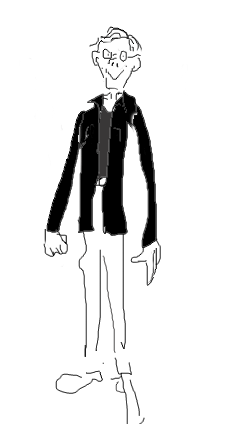

Hans Mühlen
- Telefon:
- 08-5537 8423
- Epost:
- hvzm Ø nordita.org
- Postadress:
- AlbaNova universitetscentrum
Roslagstullsbacken 21
S - 106 91 Stockholm
- Verksamhet vid Nordita:
- Ansvarig för Norditas webbplats
- Norditas systemgrupp
- Den tyska dialekt jag har, balttyska, kan låta litegrann så här:
- David Hilberts radiotal 1930, ett utdrag ur
föreläsningen "Naturerkennen und Logik".
- .
|
 Hans undervisar |